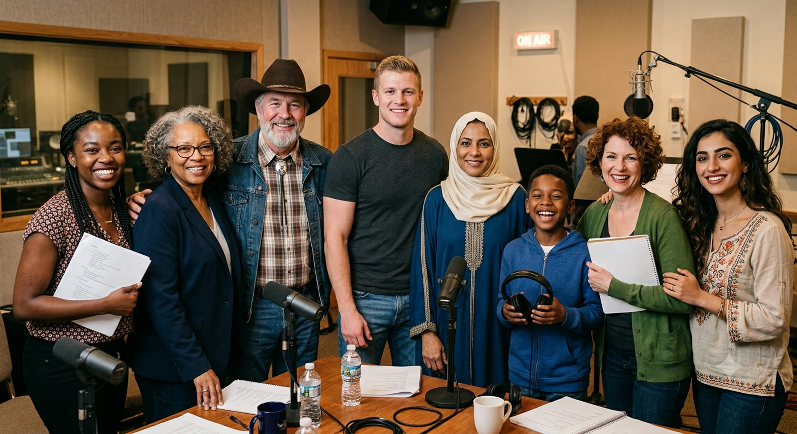

We’re AOVO Services, LLC
AOVO Services is an international voiceover and audio-production partner connecting talented voices with global audiences.
With operations in the U.S. and Egypt, we provide voice acting, English–Arabic localization, audio editing, and full project support—delivering polished, ready-to-use audio for brands, agencies, and creators.
The “AO” in AOVO
From lab coat by day to headphones at night … Ahmed is a bilingual English and Arabic voice actor, audio engineer, and biotechnologist with years of experience in professional recording.
His deep, warm, versatile voice has been featured in projects reaching audiences across 20+ countries—from documentaries and training content to commercials, promos, video games, and digital campaigns. Ahmed’s voice is featured in projects with thousands to millions of views, including one with over 106 million views and growing.
Focus: Voice acting, audio production, and MENA localization.Worldwide Administration
The sweet storyteller with a sharp business brain … Trena leads AOVO Services’s U.S. operations from Florida, managing client communication, project coordination, billing, and English-language quality control.
She makes sure every project is organized, clearly communicated, and delivered to a high standard. Bilingual in English and Italian, Trena’s favorite genre is storytelling.
Focus: U.S. operations, client relations, project management, and quality control.Global Voices, One Team

Beyond our founders, AOVO Services also works with a vetted network of U.S. and international voice talent. Need a specific accent, language, or dialect? We help find the right authentic voice for your project.
Why AOVO Services?
U.S.-Based Support
A hallmark of trusted reliability — count on friendly, straightforward communication, contracts, billing, and project coordination.
24-Hour Coverage
With Florida and Egypt as operational bases, projects keep moving across time zones.
Full Audio Production
From localization and casting to recording, editing, and mastering, we deliver high-quality, broadcast-ready files.
Ready to Be Heard?
Tell us about your project, and let AOVO Services bring it to life.
Request a Quote